Kappale 11 Aortta
Aortan sairaudet ovat tärkeä kardiovaskulaarimortaliteetin aiheuttaja. Akuuttien välittömästi hengenvaarallisten tilanteiden (kuten akuutti aorttaoireyhtymä tai aortan repeämä) ulkopuolella aortan sairaudet ovat asymptomaattisia eivätkä aiheuta statuslöydöksiä, jonka takia niiden diagnoosi ja seuranta perustuu kuvantamiseen – ensisijainen ja helpoin kuvantamistekniikka on yleensä transtorakaalinen ultraääni.
Yleisin vastaan tuleva aorttalöydös on aortan tyven ja nousevan aortan dilataatio. Aortan laajentuma tulee usein esiin oireettomalla potilaalla sattumalöydöksenä muita asioita tutkittaessa. Kappaleen tärkein osio käsitteleekin aortan ulottuvuuksia, niiden mittaamista ja raja-arvoja.
11.1 Anatomia
Aortan anatomia tulee tuntea, jotta voidaan tunnistaa ja myös mitata aortan eri osat ultraäänikoneen näytöltä.
Aortta jaetaan nousevaan osaan (ascending aorta), kaareen (aortic arch) ja laskevaan osaan (descending aorta) sekä toisaalta anatomisen sijaintinsa mukaan rinta- (thoracic aorta) ja vatsa-aortaksi (abdominal aorta).
Nouseva aortta käsittää alueen aorttaläpästä noin articulatio manubriosternalikseen (rintalastan kulma, sternal angle), jonka tasolla aortta pääsee ulos perikardiumpussista – tämän jälkeen ollaan aortan kaaressa.
Aortan kaaresta lähtee kolme päähaaraa, joiden nimet ovat järjestyksessä kulkusuuntaan a. brachiocephalica, a. carotis communis ja a. subclavia. Kierroksen tehtyään ja palattuaan n. T4-nikaman tasolle aortta jatkaa laskevana aorttana. Tässä kohtaa aortta on vielä rinta-aorttaa, mutta päästessään pallean alapuolelle sitä kutsutaan vatsa-aortaksi.
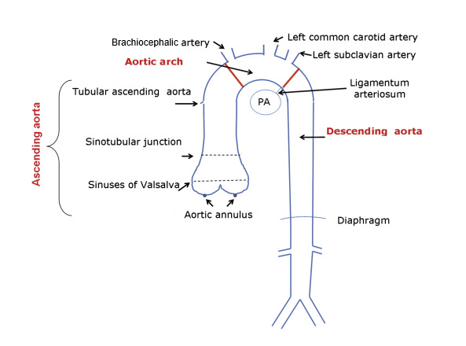
11.1.1 Nousevan aortan ulottuvuudet
Nousevasta aortasta mitataan useimmiten vain aortan tyvi (usein myös käytetään termiä “aortic root” eli aortan juuri, mutta aortan juuri sinänsä on kompleksi, joka käsittää aortan annuluksen, sinus valsavat ja sinotubulaarijunktion) ja se merkitään varsin yleisesti pelkällä lyhenteellä “Ao” lausuntoon. Aortan tyvi tarkoittaa tarkemmin siis Valsalvan sinusten välistä läpimittaa. Valsalvan sinukset siis ovat pieniä pusseja, jotka sijaitsevat juuri aorttaläpän päällä – kuspit ovat siis anatomisia tiloja, joita rajaa internaalisesti aorttaläpän kuspit ja ulkoisesti aortan seinämät ulkoiset pullistumat. Jokaiselle kuspille on oma sinuksensa. Sinuksista myös lähtee sepelvaltimot eli niistä löytyy koronaariostiumit (sepelvaltimoiden lähtöaukot): oikeasta sinuksesta lähtee RCA ja vasemmasta sinuksesta lähtee vasen päähaara, mutta posteriorisesta sinuksesta (non-koronaarisinus) ei lähde sepelvaltimorunkoa.
Aortan mittaukset suositellaan nykyään tehtävän 2D-kuvasta eikä M-moodista, koska sydämen liike usein johtaa M-moodikursorin siirtymiseen suhteessa aortan rakenteisiin. ASE:n mukaan tämä liike johtaa systemaattiseen aortan läpimitan aliarvioimiseen n. 2 millimetrillä. Jotkut ovat vielä vanhastaan tottuneet mittaamaan M-moodilla aortan (ja myös eteisenkin usein samalla), mutta nykyään ensisijaisesti kannattaa opetella 2D-kuvamittaukset.
Aluksi siis haetaan mahdollisimman hyvä PLAX-projektio, jossa aortan rakenteet näkyvät tarkasti. Sitten pysäytetään liikkuva 2D-kuva Freeze-painikkeella. Pallohiirellä haetaan pysäytetystä kuvasarjasta loppudiastole, joka on käytännössä silloin kun mitraaliläppä alkaa sulkeutumaan ja aortta on kiinni – kuvantaminen tehdään diastolessa, koska systole aiheuttaa parin millimetrin laajenemista. Aortan tyvi mitataan nykysuositusten mukaan leading-to-leading edge -metodilla (outer to inner, etureunasta etureunaan). Käytännöt kuitenkin eroavat eri guidelinejen välillä, mutta niin ESC kuin ASE vielä suosittelevat leading-to-leading edge -mittauksia. Jotkut lähteet nykyään suosittelevat inner-to-inner edge -metodia, mutta käytännössä ero eri mittaustapojen välillä on n. 1-4 millimetrin luokkaa yleensä.
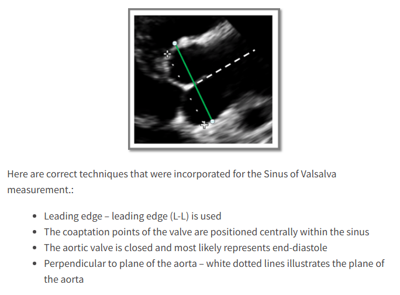
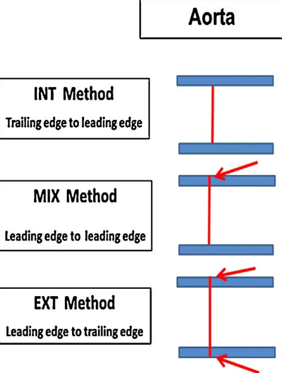
Aortan tyven lisäksi nousevasta aortasta voidaan mitata myös sinotubulaarijunktio (STJ) ja nouseva tubulaarinen aortta (ATA). Sinotubulaarijunktio tarkoittaa nimensä mukaan aluetta Valsalvan sinusten ja aortan tubulaarisen konfiguraation välissä.
Lisäksi mittauksiin sisältyy usein sinänsä itse aorttaläpän mittauksista ns. virtuaalinen aortan annulus eli aortan purjeiden pohjien muodostamasta linjasta piirretty läpimitta. Se kuvastaa yleensä aortan juuren kapeinta osaa. Vaikka se ei ole todellinen anatominen rakenne, niin se muodostaa echossa selkeä virtuaalisen renkaan. Alla olevassa kuviossa oleva sininen linja taas on ns. oikea anatominen rakenne eli aortan ja kammion välinen junktio. Kun aortan annulus mitataan, niin tyypillisesti käytetään virtuaalista rengasta. Se on tärkeä mitta aorttaläpän toimenpiteitä suunniteltaessa.
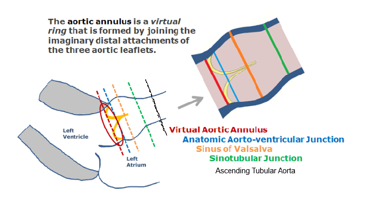
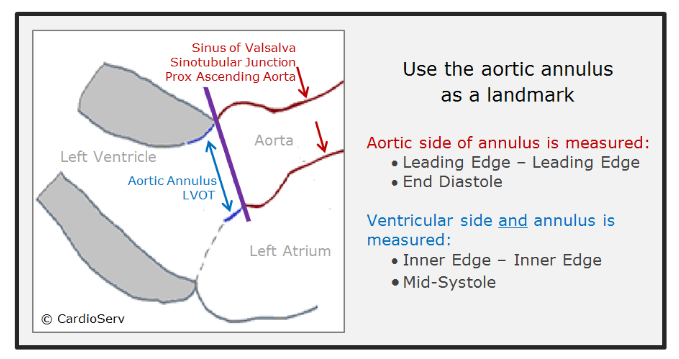
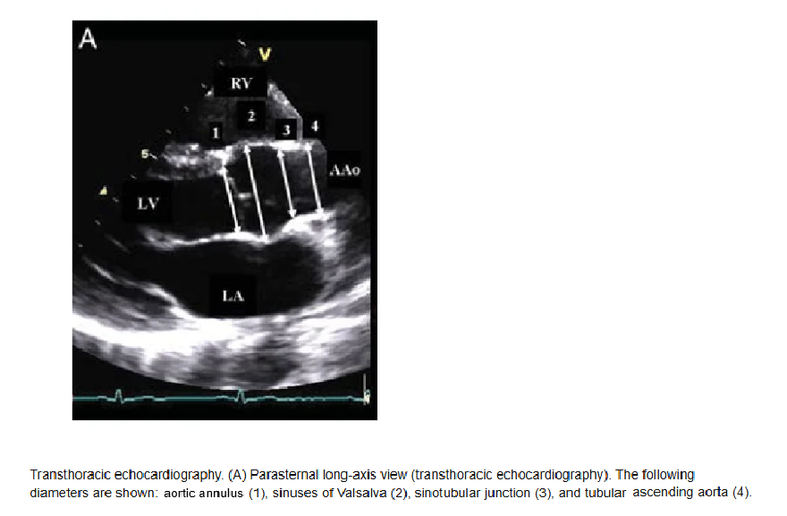
11.1.2 Aortan muut mitat
Rinta-aortasta (vatsa-aorttaa ei käsitellä tässä kappaleessa) voidaan lisäksi mitata aortan kaaren ja myös laskevankin aortan läpimittoja. Näitä mittauksia varten tulee hakea suprasternaalinen pitkittäisakseli (suprasternal notch (SSN) view; long axis) -projektio. Se visualisoi aortan kaarta ja myös proksimaalista laskevaa aorttaa.
Suprasternaalisesta ikkunasta tehdyistä aortan ulottuvuuksien mittaamisesta on vain vähän guidelineja, joten helpointa on etsiä eri kohtia nousevasta aortasta, aortan kaaresta ja laskevasta aortasta ja mitata niiden läpimittoja. Voi mitata esim. ennen truncus brachiocephalicaa (distal ascending aorta / proximal aortic arch), a. brachiocephalican ja a. carotis communiksen välistä, a. carotis communiksen ja a. subclavian välistä ja vielä ns. aortan istmuksen eli a. subclavian distaalipuoleisen aortan osan ductus arteriosuksen kiinnittymiskohdassa.
Tulee varoa varsinkin proksimaalista kaarta mitatessa, että ei mittaa v. brachiocephalica sinistraa mukaan (voi helposti ajatella superiorisen seinämän olevan osa oartan seinämää, jos ei näe sen inferiorista seinämää tarkasti), jolloin kaaresta tulisi mitattua liian paksu.
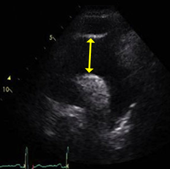
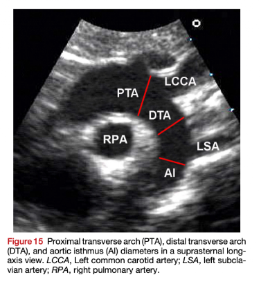
11.1.3 Normaaliarvot
Pääasiassa mittauksilla etsitään, onko aortan dilataatiota ja varsinkin aneurysmaa todettavissa. Määritelmällisesti aortan aneurysma tarkoittaa paikallista patologista aortan dilataatiota, jossa aortan läpimitta on paikallisesti yli 1,5x normaaliin verrattuna. Tämä määritelmä pätee hyvin laskevaan rinta-aorttaan ja vatsa-aorttaan. Kuitenkin aortan juuren suhteen määritelmä hieman pettää; esimerkiksi 40-vuotiaalla miehellä aortan juuren keskimääräinen paksuus on n. 3.5cm, mutta 1.5x-kriteerillä laskettuna hänen aortan juurensa tulisi olla 5.25cm, jotta se olisi aneurysma, vaikka jo tätä ennen sitä ajateltaisiin merkittävästi laajentuneeksi ja aneurysmaattiseksi. Joillain potilailla jo 5cm aortan juuri olisi jopa indikaatio korjaukselle. Normaalin ylärajaksi on määritelty aortan juuren suhteen mitta, joka on yli 2 keskihajontaa normaalin keskiarvon yläpuolella. Termiä ektasia voi käyttää kuvaamaan laajentumaa, joka ei vielä ole aneurysman tasolla.
Aikuisilla aortan normaalit ulottuvuudet ovat riippuvaisia iästä ja kehon koosta (varsinkin pituus on yksi merkittävimmistä aortan juuren koon ennustajista) sekä sukupuolesta – ulottuvuudet ovat suurempia miehillä, vaikka ikä ja kehon koko olisivatkin samat. Monissa lähteissä aortan ulottuvuudet on indeksöity kehon pinta-alaan (BSA), mutta tämäkään ei ole täydellinen mittari. Sitä kuitenkin käytetään paljonkin ja ASE on esittänyt normaalirajat aortan juuren läpimitalle iän, sukupuolen ja BSA:n mukaan.
Sen sijaan, että yrittäisi muistaa alla olevan taulukon tai lähtisi aina laskemaan jokaisen potilaan kohdalla BSA:ta, niin voi vain muistaa numeron 4 cm (tai kuten yleensä ulottuvuus ilmoitetaan millimetreissä niin 40 mm). Jos nousevassa aortassa läpimitta on jossain kohtaa yli 4 cm, niin aortan juuri on yleensä ajateltu dilatoituneeksi – joillain potilailla tosin tämä nyrkkisääntö ei ole täysin pätevä, mutta sillä pääsee pitkälle. Naisilla raja on yleensä 36 mm. Kehon pinta-alaan suhteutettuna normaalin aortan halkaisijan ylärajaksi katsotaan 22 mm/m² (aortic size index, ASI: aortan halkaisija [mm]/kehon pinta-ala [m2])).
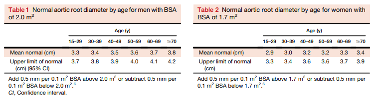
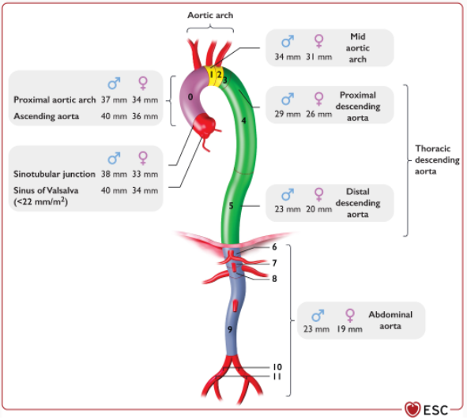
11.1.4 Miksi dilataatio kiinnostaa?
Rinta-aortan laajentuma on yleensä oireeton, muun kuvantamisen yhteydessä havaittu sattumalöydös. Lähteestä riippuen rinta-aortan laajentuman esiintyvyys on 5–10/100 000 henkilövuotta ja miehillä yleisempi kuin naisilla (suhde 4:1).
Rinta-aortan laajentumista noin 60 % sijaitsee aortan tyvessä ja/tai nousevassa aortassa. Nousevan aortan halkaisija kasvaa hieman nopeammin laskevaan rinta-aorttaan verrattuna, ja tyypillisesti laajentuman kasvu on nopeampaa naisilla.
Aortan halkaisijan kasvaessa akuutin aorttasyndrooman riski kasvaa merkittävästi. Akuutti aorttasyndrooma tarkoittaa äkillistä aortan seinämävauriota ja siitä seuraavia tapahtumia. Tyypillisiä akuutin aorttasyndrooman ilmenemismuotoja ovat aortan dissekaatio, seinämän sisäinen verenpurkauma ja läpäisevä ateroskleroottinen haavauma (lisää näistä vielä tässä kappaleessa). Tutkimusnäytön perusteella laajentuman korjausta suositellaan nykyään aortan halkaisijan ylittäessä 50–55 mm riippuen potilaan muista akuutille aorttasyndroomalle altistavista riskitekijöistä. Myös nousevan aortan laajentuman kasvunopeus on otettu huomioon hoitosuosituksissa siten, että nopeasti kasvavat laajentumat suositellaan leikkaamaan, mikäli potilaan leikkausriski on pieni.
Nousevan aortan laajentuman kasvunopeus vaihtelee tyypillisesti välillä 0,1–2,8 mm/vuosi, ja tätä suuremmat kasvunopeudet ovat harvinaisia. Nousevan aortan halkaisijan lisäksi myös laajentuman sijainti vaikuttaa akuutin aorttasyndrooman riskiin. Aortan tyven laajentumat ovat vaarallisempia, koska niihin liittyy suurempi dissekaatioriski ja ne myös kasvavat nopeammin tubulaarisen osan laajentumiin verrattuna.
Vaikka aortan laajentuman halkaisija on edelleen akuuttien aorttasyndroomien tärkein riskitekijä, suurimmalla osalla dissekaation saaneista potilaista laajentuma ei ehdi saavuttaa leikkausrajaa. Tämän vuoksi on pyritty löytämään myös uusia akuutin aorttasyndrooman riskitekijöitä. Yksi uusimmista tutkimuskohteista on nousevan aortan pituus (ei tyypillisesti mitata ultraäänellä). Tutkimuksissa on todettu, että dissekaatiopotilailla nouseva aortta on pidempi kuin muilla nousevan aortan laajentumaa sairastavilla potilailla ja terveillä verrokeilla. Potilailla, joilla nousevan aortan pituus on vähintään 13 cm, on lähes viisinkertainen akuutin aorttasyndrooman riski verrattuna potilaisiin, joilla nousevan aortan pituus on alle 9 cm. Yli 11 senttimetrin pituisen nousevan aortan on todettu olevan raja, jonka jälkeen akuutin aorttasyndrooman riski kasvaa huomattavasti, ja uudet hoitosuositukset ottavatkin nyt huomioon laajentuman maksimihalkaisijan lisäksi myös nousevan aortan pituuden leikkaushoitoa harkittaessa.
11.1.5 Kuvantamisista tarkemmin
Sydämen ultraäänitutkimus on perustyökalu, jolla mitataan aortan tyvi ja nouseva osa. Se ei kuitenkaan ole täydellinen kuvantamiskeino ja tietokonetomografia tai magneettikuvaus tehdään, kun ultraäänilöydös on epävarma, laajentuma ylittää seurantakynnyksen tai suunnitellaan leikkausta. Kuvantamismetodien välillä on eroja sen suhteen, että miten aortta mitataan niissä (myös kursorin sijainti vaihtuu kuvantamisen välillä; TT/MK-kuvantamisessa mitataan ulottuvuudet sisäreunasta sisäreunaan) ja mitä mittoja kerätään.
Echossa PLAX:sta mitattu aortan tyven mittaus on tärkein mitta tyvestä. PLAX on tärkein projektio myös STJ:lle ja nousevalle aortalle. PLAX:ssa siis aortta yleensä leikataan suhteellisen kohtisuorasti pitkään akseliin nähden, jolloin ei valheellisesti yliarvioida paksuutta vinon leikkeen kautta.
Varsinkin CT- ja MRI-kuvissa mitataan tästä poiketen joko sinus-sinus- tai sinus-kommissuura-mitat jokaiselle kuspille poikkileikkauksesta; tätä voi kuitenkin periaatteessa myös harrastaa ultraäänikuvien kanssakin antamaan alustava arvio dilataation symmetrisyydestä. PSAX-projektiota voidaan siis käyttää lisätukena kartoittamaan aortan tyven anatomiaa tarkemmin. PLAX käsittää vain yhden poikkileikkaustason – yleensä siinä nähdään oikean koronaarisinuksen ja non-koronaarisinuksen välinen tila. Jos potilaalla on asymmetristä dilataatiota (esim. yksi tietty sinus on pullistuneempi), niin PLAX voi aliarvioida oikean maksimaalisen läpimitan. Jos pullistuma on todella asymmetrinen ja periaattessa vain säkkimäinen pullistuma, joka työntyy ulospäin yhdessä verisuonen kohdassa, niin se on sukkulamaista repeämäherkempi. Säkkimäinen pullistuma voi liittyä mm. infektioon, läpäisevään ateroskleroottiseen haavaumaan, traumaan tai tulehduksellisiin sairauksiin. Myös bikuspiseen aorttaläppään usein liittyy asymmetrinen aortan tyvi.
PSAX on tärkeä projektio tarkistaa tämän ulkopuolellakin, koska aortan halkaisijan mittaamisen lisäksi on erittäin tärkeää havainnoida ja kirjata aorttaläppäpurjeiden määrä (lisää tästä vielä tässä kappaleessa) sekä läpän toiminta, sillä ne vaikuttavat seurantaan ja leikkausrajoihin.
CT- ja MRI-kuvissa mitataan yleensä myös aikaisemmin mainittu aortan pituus, jota kautta voidaan laskea mm. leikkausrajoihin vaikuttava aortan läpimitan/korkeuden suhde
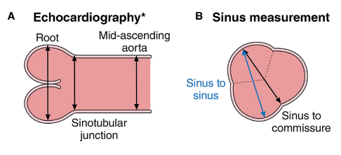
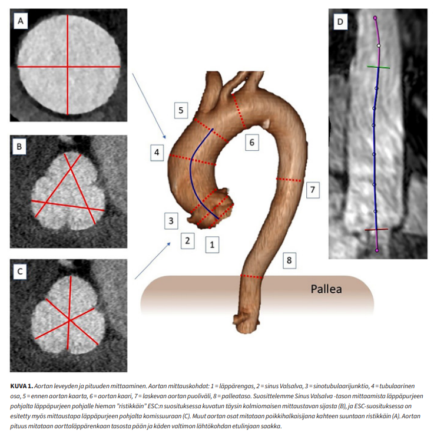
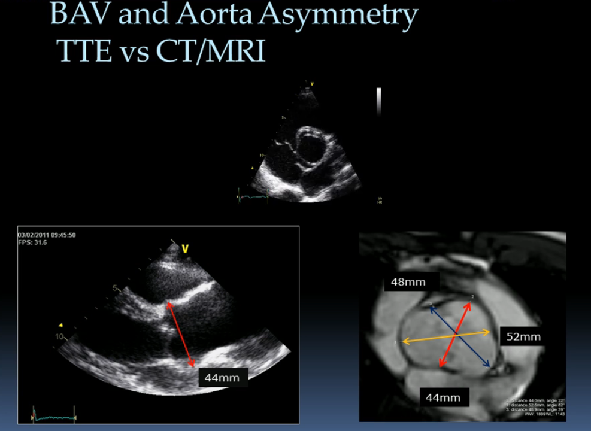
11.1.6 Nousevan aortan laajentuman seuranta ja kirurginen hoito
Aortan laajentuman seuranta suositellaan tehtäväksi samaa kuvantamismenetelmää käyttäen 6 kuukauden - 3 vuoden välein riippuen aortan leveydestä ja kasvunopeudesta. Aortan halkaisijaan perustuva seuranta- ja leikkaussuositus on esitetty kaaviomuodossa alla olevassa kuvassa.
On kuitenkin huomionarvoista todeta, että jopa puolella työikäisistä suomalaisista miehistä on edellä kuvattujen raja-arvojen mukaan aortan laajentuma. ESC:n suosituksessa esitetyt aortan laajentuman halkaisijaan perustuvat seurannan alarajat saattavatkin olla liian matalia käytettäväksi sellaisenaan suomalaisessa väestössä. Kehon kokoon suhteutetut mitat ovat tässä mielessä suositeltavampia. Yleisesti on käytössä suhteutus kehon pinta-alaan (aortic size index, ASI), mutta pelkästään potilaan pituuteen perustuva indeksöinti (AHI) yleistyy, koska ylipaino vääristää tuloksia pinta-alaan suhteuttaessa. Normaalin ASI:n rajaksi katsotaan 22 mm/m² ja taan AHI:n mukaan 24 mm/m on matalan riskin potilas.
Laajentuma on yleensä aiheellista hoitaa, kun läpimitta ylittää ≥ 55mm. Nykysuosituksissa kuitenkin tietyt tekijät voivat laskea rajaa jopa ad 50mm (ja mahdollisesti jopa harvoin ad 45mm esim. Marfanin oireyhtymä -potilailla). Riski komplikaatioille yleensä nousee merkittävästi normaalipopulaatiossa kahdessa kohtaa: 52.5mm ja 57.5mm kohdilla. Tämän takia varsinkin rajat 50mm ja 55mm on asetettu leikkausrajoiksi.
Nousevan aortan laajentuman ensisijainen hoito on avosydänkirurgia. Laajentuman sijainnista riippuen kyseeseen tulee joko koko aortan tyven korjaaminen yhdistelmäproteesilla sisältäen aorttaläpän ja sepelvaltimoiden istutuksen (composite graft) tai silloin, kun laajentuma sijaitsee vain aortan tubulaarisessa osassa, korjaus tubulaarisella verisuoniproteesilla. Korjaus ulotetaan niin, että distaalianastomoosin alueella aorttan halkaisija on alle 45 mm, ja tarvittaessa korjataan myös aortan kaari, joko puolikaarikorjauksella tai kokonaan, istuttaen kaaren valtimot proteesiin. Jos potilaan aorttaläppä ja läpän toiminta ovat normaaleja mutta laajenema alkaa jo sinus Valsalvan alueelta, voidaan nousevan aortan korjaus tehdä myös läpän säästävällä leikkauksella, jossa oma läppä kiinnitetään aorttaproteesin sisälle (David-leikkaus). Erityistapauksissa, kun laajenema ei lähde aortan tyvestä ja/tai potilaalla on merkittäviä perussairauksia, jotka puoltavat avosydänkirurgisesta leikkauksesta pidättäytymistä, distaalisen nousevan aortan ja aortan kaaren laajentumia voidaan hoitaa endovaskulaarisin menetelmin (thoracic endovascular repair, TEVAR). Näissä tapauksissa, jos TEVAR-hoito joudutaan aloittamaan nousevan aortan puolelta, on aortan kaaren valtimot ohitettava erikseen debranching-tyyliin nousevasta aortasta. Distaalisen aortan kaaren laajentumissa kyseeseen voi tulla myös TEVAR-hoito niin, että tarvittaessa vasempaan kaulavaltimoon ja solisvaltimoon tehdään ohitus tai haaroitettu endovaskulaarinen proteesi.
Avokorjauksen jälkeen suositellaan TT-tutkimusta kuukauden sisällä toimenpiteestä sekä sen jälkeen vuosittaista seurantaa ensimmäisten kahden vuoden ajan, minkä jälkeen siirrytään joka viides vuosi tehtävään seurantatutkimukseen, mikäli löydökset ovat muuttumattomat.
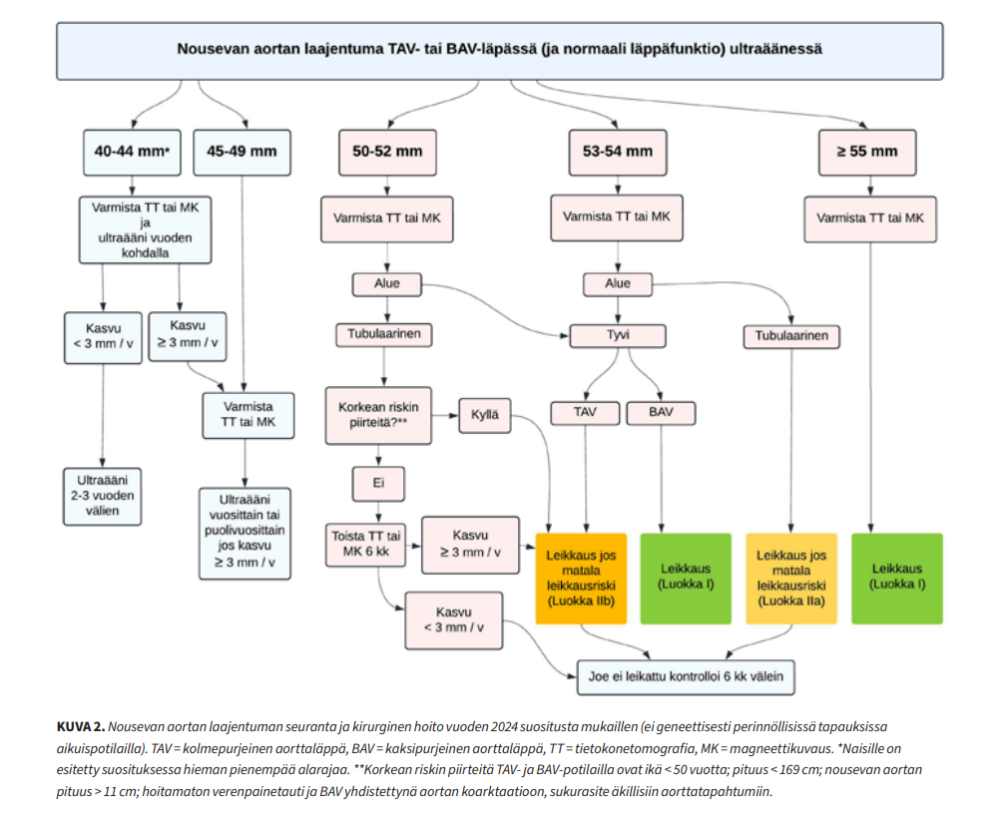
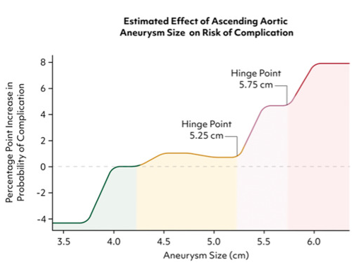
11.1.7 Rinta-aortan dilataation etiologia ja genetiikan huomioiminen
Rinta-aortan dilataatio ja aneurysma voivat olla sporadisia ja idiopaattisia, mutta hyvin usein joitakin riskitekijöitä on todettavissa. Noin puolet rinta-aortan aneurysmista liittyy ateroskleroosiin. Ateroskleroosin riskitekijöistä etenkin kohonnut verenpaine, mutta myös tupakointi ja hyperkolesterolemia altistavat aneurysmien muodostumiselle. Ateroskleroosissa sisäkerros paksuntuu ja välivaiheiden kautta aterooma johtaa elastisten säikeiden ja sileälihaksen hajoamiseen aortan keskikerroksessa. Tämä kudos korvautuu sidekudoksella ja lipideillä, jotka heikentävät seinämää ja altistavat aneurysmaattiselle rappeutumiselle.
Myös aortan vammat, aorttatulehdukset eli aortiitit (esim. syfilis, jättisoluarteriitti, Takayasun arteriitti), aikaisempi aortan kirurgia ja muun muassa erilaiset sepelvaltimotoimenpiteet voivat altistaa aortan vaurioitumiselle ja aneurysmien synnylle. Kokaiinin ja amfetamiinin käyttöön voi liittyä nousevan aortan aneurysmamuodostuksen ja dissekoituman riski (voimakas sympateettinen overdrve johtaa hypertensioon, takykardiaan ja lisääntyneeseen stressiin aortan seinämässä; pitkäaikaiskäyttöön liittyy myös endoteelidysfunktio, sileälihasapoptoosi ja seinämäjäykkyyden krooninen lisääntyminen).
Synnynnäisistä, ei selkeästi perinnöllisistä syistä mm. kaksiliuskaiseen aorttaläppään liittyy suurentunut riski kehittää varsinkin aortan tyven ja nousevan aortan dilataatio ja jopa dissekoituma. Muita ovat mm. Turnerin oireyhtymä (45,X) aortan koarktaatio ja kompleksiset synnynnäiset sydänpatologiat.
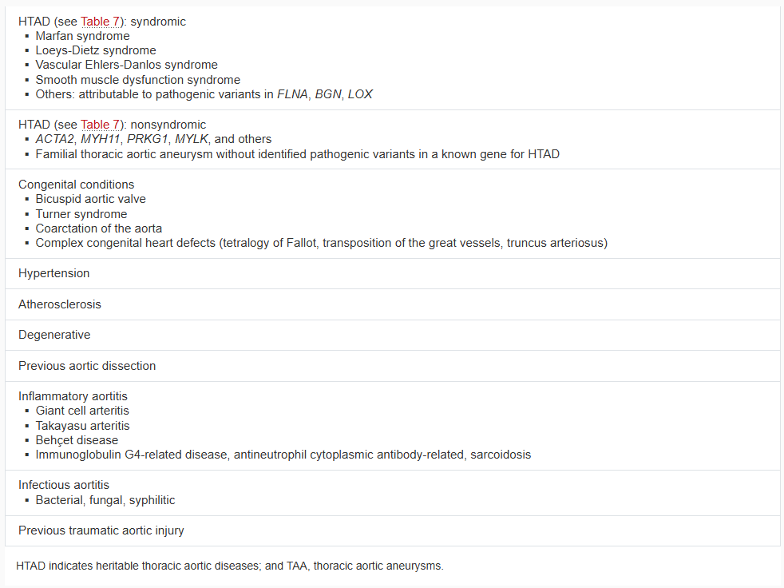
Lisäksi taulukossa mainitut syndroomiset (systeemisiä fyysisiä piirteitä) ja ei-syndroomiset (aorttaan isoloituneet) perinnölliset aorttasairaudet (HTAD) ovat varsinkin nuorilla potilailla merkittävä selittävä tekijä. Näitä ei yleensä tule liikaa opiskeltua kardiologian ulkopuolella, joten käydään kertauksena tärkeimmät läpi.
- Diagnoosi perustuu Ghentin kriteereihin. Aina ei ole tarvetta geenitutkimuksille, vaan diagnoosi voi useinkin olla kliininen. Koska MFS on harvinainen, moniongelmainen, usein jo lapsuudessa ilmenevä perinnöllinen sairaus, on esitetty, että olipa potilas lapsi tai aikuinen hänet lähetetään yliopistosairaalan perinnöllisyyslääketieteen ja kardiologian yksikköön epäiltäessä MFS:a.
- Vaikka vuosittain tehtävällä ultraäänitutkimuksella voidaan arvioida läppien tilannetta ja seurata nousevaa aorttaa, koko aortan huolellinen seuranta toistetulla tietokonetomografialla tai magneettikuvauksella on suositeltavaa. Jos nouseva aortta on selvästi laajentunut mutta leikkauskriteerit eivät vielä täyty, TT- tai magneettikuvaus tehdään 6–12 kuukauden välein. Jos aortan tyvi on normaali, magneettikuvaus tehdään 5 vuoden välein. Seuranta on elinikäistä.
- Aortan laajentumaa estämään on käytetty beetasalpaajia yli 20 vuoden ajan sekä aikuis- että lapsipotilailla, mutta näyttö niiden tehosta on ristiriitaista. Losartaanin osoitettiin hiirimallissa vähentävän TGF-beetan signaaliketjun aktiviteettia ja jopa estävän aortan laajentumisen. Kliinisissä tutkimuksissa losartaani ei kuitenkaan ollut beetasalpaajaa tehokkaampi estämään dilataatiota. Suositusten perusteella diagnoosin varmistuttua kaikille Marfan-potilaille tulisi aloittaa suuriannoksisen beetasalpaajalääkitys tai losartaani tavoiteannoksella 100 mg vuorokaudessa.
- Marfan-potilaan nousevan aortan leikkausta suositellaan aikaisemmin kuin normaaliväestössä: läpimitan ylittäessä 50 mm. Mikäli suvussa on aortan dissekoitumia, läpimitta kasvaa yli 3 mm/vuosi tai potilaalla on selvä aortta- tai mitraaliläpän vuoto tai raskaustoive, leikkausraja on 45 mm. Muun aortan dilataation osalta leikkausrajaksi on suositeltu 50 mm tai osoitettu aortan kasvutaipumus. Vaikka osa aortasta olisi korvattu proteesilla, täytyy jäljelle jäänyttä aorttaa seurata edellä mainittujen periaatteiden mukaisesti huomattavan laajenemis- ja dissekaatioriskin vuoksi.
- LDS on autosomaalisesti dominantisti periytyvä sairaus, johon liittyy aortan laajenemisen ohella tyypillisinä piirteinä huomattava valtimoiden mutkaisuus, hypertelorismi (silmien sijainti tavallista etäämpänä toisistaan) ja kitalakihalkio/kaksiosainen uvula Aneurysmia voi kehittyä aortan lisäksi muihin suoniin, kuten viskeraali- ja aivovaltimoihin. LDS aiheutuu usein tyypin I tai II TGF-beetareseptoreiden (TGFBR1, TGFBR2) mutaatioista (kuten Marfaninkin oireyhtymä joskus) – harvinaisempia ovat SMAD2, SMAD3, TGFB2 tai TGFB3. Toisin kuin Marfanin oireyhtymää sairastavilla, Loeys-Dietzin oireyhtymää sairastavilla ei yleensä todeta pitkien luiden liikakasvua eikä mykiön siirtymää. Loeys-Dietz-potilaiden valtimotauti sen sijaan etenee usein aggressiivisemmin ja johtaa aortan dissekoitumaan tai repeämään varhaisemmassa vaiheessa ja nuorempana.
- Ehlers-Danlosin syndrooma (EDS) viittaa joukkoon perinnöllisiä monimuotoisia tukikudoksen sairauksia; yleisin tyyppi on hypermobiili muoto (tyypillistä nivelten ylitaipuisuus ja yliliikkuvuus; altistaa mm. nivelluksaatioille). Vakavin muoto on vaskulaarinen EDS, joka johtuu tyypin III kollageenin synteesiä ja rakennetta häiritsevästä COL3A1-mutaatiosta -> verisuonien ja onttojen elimien (esim. suoliston) seinämien heikkous, mikä johtaa verisuonien aneurysmiin ja repeämiin ja dissekoituma-alttiuteen sekä alttiuteen onttojen elimien, kuten sigmasuolen ja kohdun repeämille. Sairaudelle on tyypillistä myös tietynlaiset kasvonpiirteet (ohuet huulet, ylähuulen keskiviivaura huulesta sierainten tyveen, pieni leuka, ohut nenänselkä, suuret silmät) ja ohut, mustelmaherkkä iho. vEDS:ssä mikä tahansa affisioitunut valtimosuoni voi dissekoitua ilman merkittävää laajenemista. Leikkaukseen joudutaan usein päivystyksellisesti, ja kudosten yleinen hauraus suurentaa leikkausriskiä. Yleisesti hyväksyttyjä aortan leikkausaiheita ei ole käytössä, vaan hoitoratkaisut tapahtuvat yksilöllisin perustein.
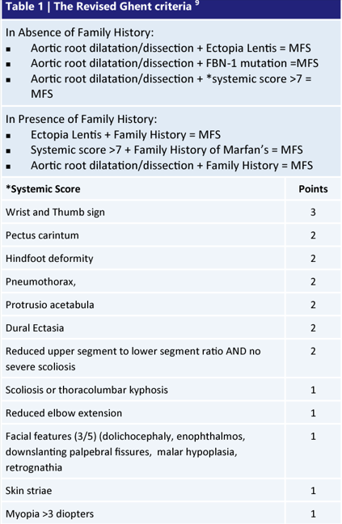
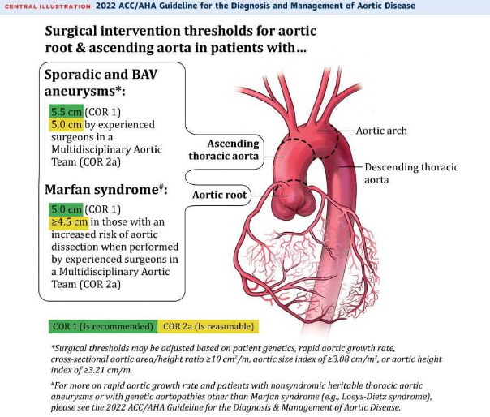
Muita syndroomisia aorttasairauksia ovat mm. Loyes–Dietzin oireyhtymä (LDS) ja vaskulaarinen Ehlers–Danlosin oireyhtymä (vEDS; vanh. tyypin 4 Ehlers–Danlosin oireyhtymä).
Kliiniseen käyttöön on tullut kaupallisista laboratorioista saatavia aortan geenipaneelitutkimuksia, jolla voidaan seuloa suurin osa tiedossa olevista mutaatioista. Uusia mutaatioita löytyy koko ajan, ja tieto karttuu valtavalla vauhdilla. Täysin vakiintuneita käyttöaiheita tai suosituksia aortan sairauksien geenitestaukseen ei vielä ole maassamme olemassa.
Mikäli suvussa on aortan dissekoitumia tai aneurysmia tai potilaan kliiniset piirteet viittaavat esimerkiksi Marfanin tai Loyes-–Dietzin oireyhtymään, on suositeltavaa keskustella potilaan kanssa mahdollisesta periytyvyydestä ja geenitutkimusten hyödyistä ja haitoista sekä ohjata hänet mahdollisuuksien mukaan kliinisen geneetikon vastaanotolle. Geenitestausta suositellaan harkittavaksi, jos indeksipotilaan ohella vähintään yhdellä ensimmäisen asteen sukulaisella on ollut aortan dissekoituma tai laajenema tai jos potilaalla on aortan dissektion tai dilataation lisäksi muita selvästi kliinisiä poikkeavia löydöksiä (esim. Marfanin oireyhtymään viittaavat kliiniset piirteet tai huomattava valtimoiden mutkaisuus). Geenitestausta suositellaan myös, mikäli ensimmäisen asteen sukulaisella on aortan sairaus ja siihen liittyvä tunnettu geenimutaatio. Myös nuorten potilaiden geenitestausta voi harkita. Kehittyneestä geenidiagnostiikasta huolimatta suvuittain esiintyvistä aortan sairauksista ei läheskään aina pystytä identifioimaan tunnettua, varmasti merkittävää geenivirhettä, jolla olisi merkitystä sukulaisten tutkimiselle.
11.2 Sudenkuopat
11.2.1 Väärä kulma
Usein näkee, että aivan leveintä kohtaa ei olla mitattu Valsalvan sinusten välistä läpimittaa haettassa. Tarkoitus on siis vetää kaliiperilla viiva niin, että se käsittää sinusten maksimaalisen kuoppaisuuden ja kulkee kohtisuorasti aortan pitkittäisakselia pitkin. Ensimmäisessä kuvassa kaliiperit ovat liian lähellä annulusta ja missaavat maksimaalisen läpimitan.
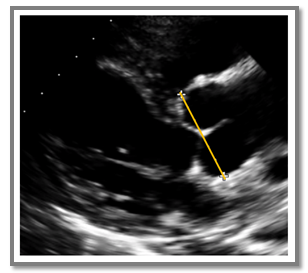
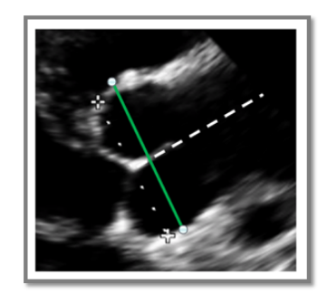
11.2.2 Väärä ajoitus ja tekniikka
Voi helposti ajautua mittaamaan LVOT:n, annuluksen, tyven, STJ:n ja ATA:n samasta freeze-framesta, mutta tulee aina pitää mielessä oikea ajoitus kullekin mitalle. Samoin itse mittaustekniikka jää helposti vaihtamatta eri mittojen välillä. Helppo muistisääntö on kuitenkin se, että kaikki aortan virtuaalisen annuluksen aorttapuolella mitataan loppudiastolessa ja leading-edge-to-leading-edge-tekniikalla. Taas aortan annulus ja vasemman kanavan ulosvirtauskanava (LVOT) mitataan keskisystolessa ja inner-to-inner-edge.
11.2.3 Koronaariostiumit
Echossa voi usein ihan visuaalisesti nähdä sepelvaltimoiden päärunkojen lähtöaukot eli koronaariostiumit: oikeasta sinuksesta lähtee RCA ja vasemmasta sinuksesta lähtee vasen päähaara, mutta posteriorisesta sinuksesta (non-koronaarisinus) ei lähde sepelvaltimorunkoa. Ostiumit ja itse suonet on hyvä tiedostaa ja tunnistaa, jotta ei säikähdä niitä tai mittaa niistä aortan paksuutta. Tyypillisesti PLAX:ssa voidaan nähdä erityisesti proksimaalinen RCA. Vasen päähaarakin voidaan visualisoida off-axis-kuvantamisella, mutta normaalissa PLAX:ssa näkyy siis yleensä oikea sinus ja non-koronaarisinus.
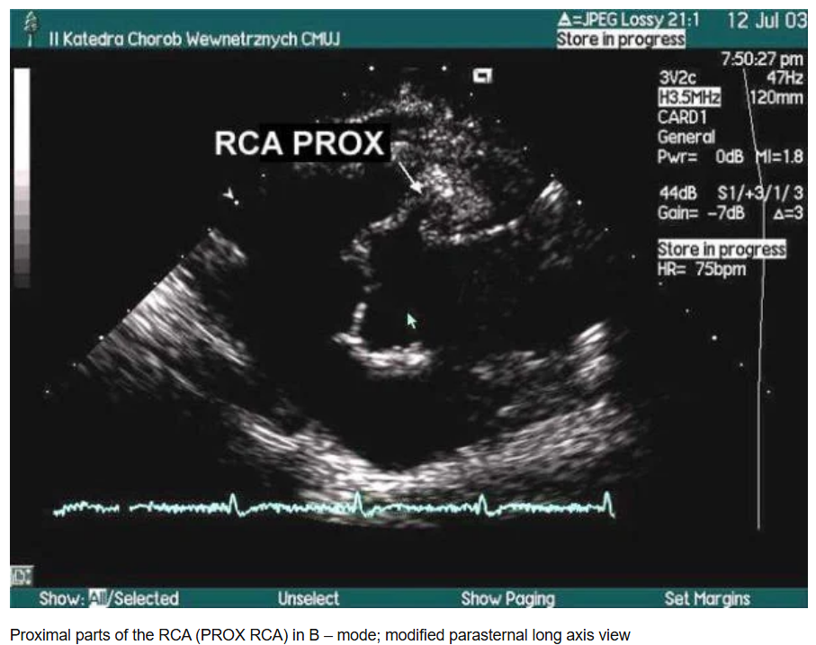
11.3 Aortan kuspisuus
Vaikka tämä kappale käsitteleekin enemmän itse aorttaa eikä niinkään aorttaläppää, niin aorttaläpän kuspisuus/liuskaisuus on vahvasti osa aorttapatologiakeskustelua. Käsitelläänkin nyt tässä kappaleessa, miten arvioidaan kuinka monta liuskaa potilaan aorttaläpässä on.
Normaalistihan aorttaläppä koostuu kolmesta kuspista eli liuskasta eli purjeesta. Kaksipurjeinen/Kaksiliuskainen aorttaläppä (BAV, bicuspid aortic valve) on kuitenkin yleisin synnynnäinen sydänvika, ja sen esiintyvyys on 1–2 %. Se on selvästi yleisempi miehillä kuin naisilla (esiintyvyys 2:1). Kahdessa tutkimuksessa kaksiliuskaisen aorttaläpän omaavan potilaan ensimmäisen asteen sukulaisista noin 24–37 %:lla on myös kaksiliuskainen aorttaläppä. Kaksiliuskainen aorttaläppä saattaa periytyä autosomaalisesti dominantisti, mutta penetranssi on alentunut. Kaksipurjeinen aorttaläppä liittyy usein muihin synnynnäisiin sydänvikoihin, kuten kammioväliseinäaukkoon, avoimeen valtimotiehyeeseen, aortan koarktaatioon tai katkenneeseen aortan kaareen. Turnerin oireyhtymäpotilailla on todettu miltei kolmanneksella kaksipurjeinen aorttaläppä.
Kaksipurjeinen aorttaläppä on kliinisesti merkittävä paitsi yleisyytensä vuoksi myös siihen liittyvien moninaisten ongelmien vuoksi. Bikusdaalipiseen läppään kehittyy iän myötä lähes aina jonkinasteinen läppävika, ja on arvioitu, että jopa neljännes BAV-potilaista joutuu elämänsä aikana läppäleikkaukseen. Nuorilla potilailla aorttaläpän vuoto on stenoosia yleisempi, kun taas vanhemmilla potilailla stenoosikomponentti on usein hallitsevampi.
- Kun potilaalla todetaan kaksipurjeinen aorttaläppä, on tärkeää jo diagnoosivaiheessa ja seurannassa kiinnittää huomio nousevaan aorttaan läppävian ohella. Nousevan aortan laajentuman aste arvioidaan vähintäänkin ultraäänellä, mieluummin TT:llä tai magneettikuvauksella. Pelkkään ultraäänitutkimukseen voi luottaa vain, jos nouseva aortta on ehdottoman normaali ja näkyvyys on erinomainen. Seurantaväli riippuu aortan läpimitasta, mutta jos aortan läpimitta ylittää 45 mm, arvio tulisi tehdä vuosittain. Magneettikuvaus on suositeltavin seurantamenetelmä säderasituksen puuttumisen vuoksi, mutta tarvittaessa voidaan käyttää TT:tä. Ultraääniseurantaa voidaan käyttää, jos näkyvyys on hyvä eikä magneettikuvaus- ja ultraäänimittausten välillä ole eroa.
Bikuspisen aorttaläpän anatomia voi vaihdella ja eri tyyppien luokittelu vaihtelee vuosien ja eri lähteiden välillä paljon. Tällä hetkellä ehkä hyväksytyin luokittelu on kansainväliseen konsensuslausumaan perustuva jako, jossa on kolme eri päätyyppiä ja jokaisessa päätyypissä on spesifisiä fenotyyppejä.
- Yleisin (n.70-80%) uusioituneen BAV:n fenotyyppi on oikea-vasen (Right-Left, RL) kuspifuusio. Oikea-ei-fuusio (eli oikean ja ja ei-sepelvaltimopurjeen fuusio) on toiseksi yleisin (20-30%) ja vasen-ei-fuusio on harvinaisin.
- Fenotyyppijaottelu perustuu purjeiden sijaintiin: anteroposteriorinen tai laterolateraalinen.
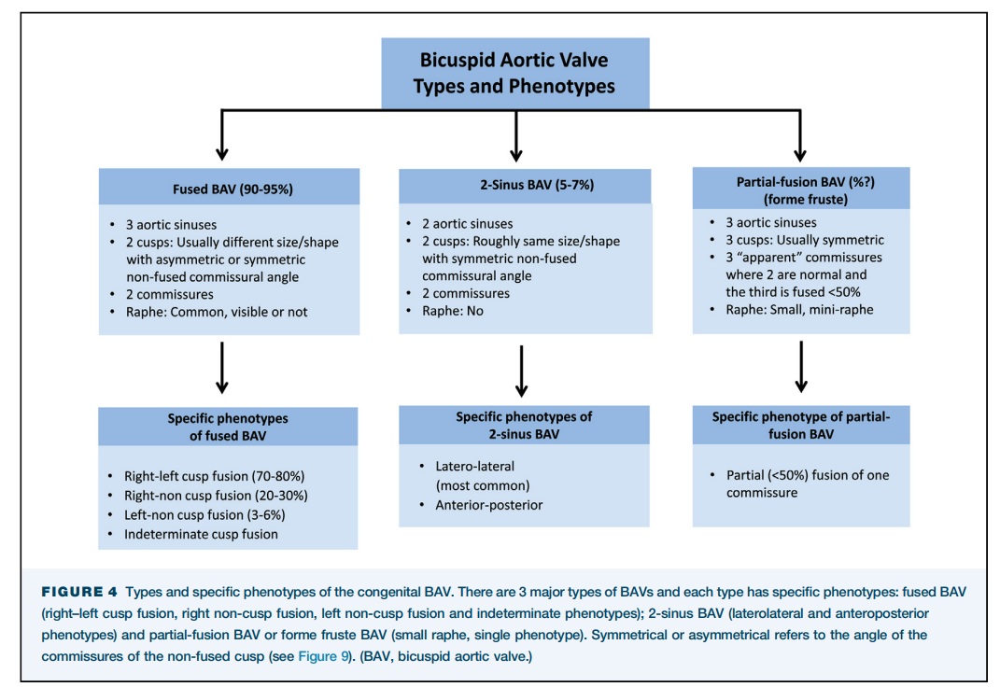
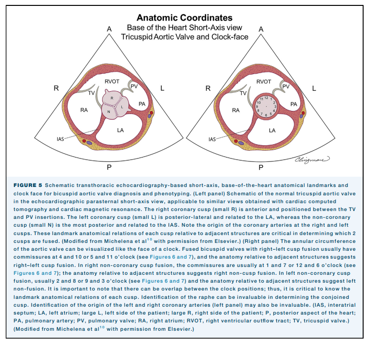
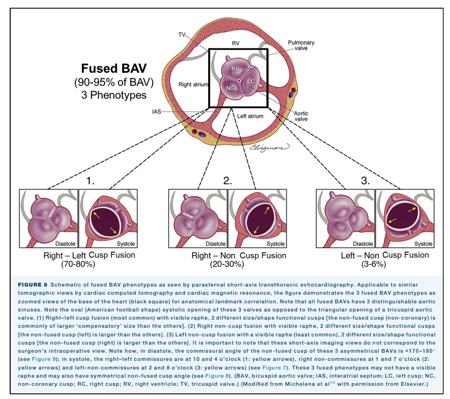
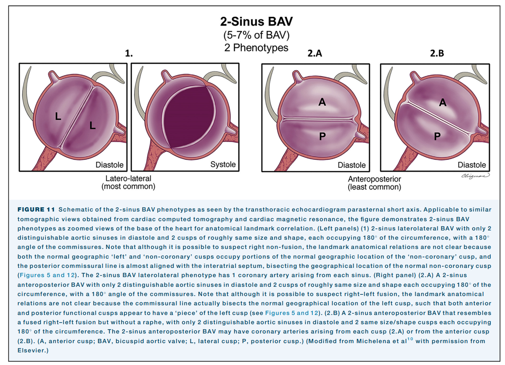
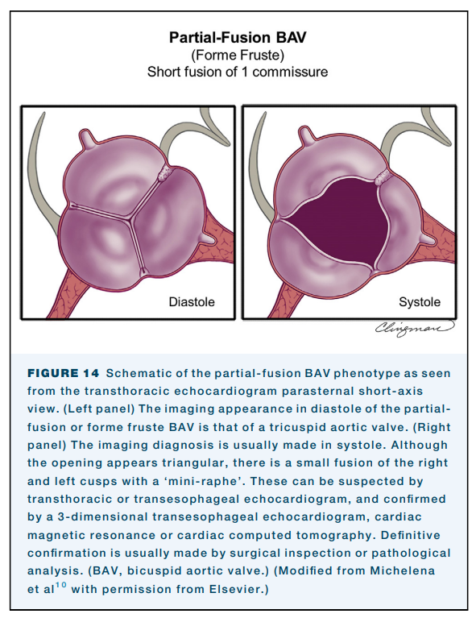
Aorttaläpän morfologia näkyy ultraäänitutkimuksessa parhaiten parasternaalisessa lyhytakseliprojektiossa (PSAX). Läppäpurjeiden määrä kannattaa tarkastaa nimenomaan systolessa, jolloin nähdään aukeaako läppäpurjeiden välinen sauma vai ei. Diastolessa saattaa läppäpurjeiden välissä näkyä sauma (raphe), joka ei kuitenkaan systolessa avaudu. Sauma hämää, koska se voi saada aorttaläpän näyttämään aivan normaalilta kolmipurjeiselta läpältä (ns. Mersu-merkki).
Usein näkyvyys on kuitenkin sen verran heikko, että aivan täysin luotettavaa arviota aorttaläpän rakenteesta ei voida antaa. Mitä vanhempi potilas on ja mitä enemmän läppään on kertynyt kalkkia, sitä vaikeampaa raphen erottaminen on todellisesta komissuurasta. Jos läpän rakenteella on esim. leikkauksen takia merkitystä, niin, tyypityksen varmistamiseksi tehdään usein ruokatorven kautta tehtävä ultraääni (TEE) tai sydämen TT-kuvaus (tietokonetomografia), joilla anatomia saadaan erottumaan paremmin.
Alla on video, joka vertaa normaalia aorttaläppää ja kaikkein yleisintä bikuspista läppää eli oikea-vasen-fuusiota, jossa on raphe. Sen jälkeen on kuvia, joissa on esimerkkejä erilaisista bikuspisista läpistä.

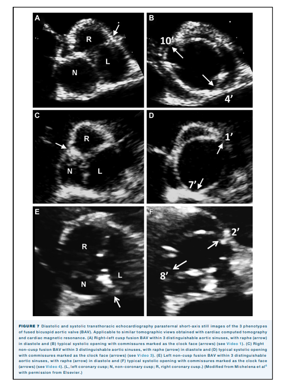
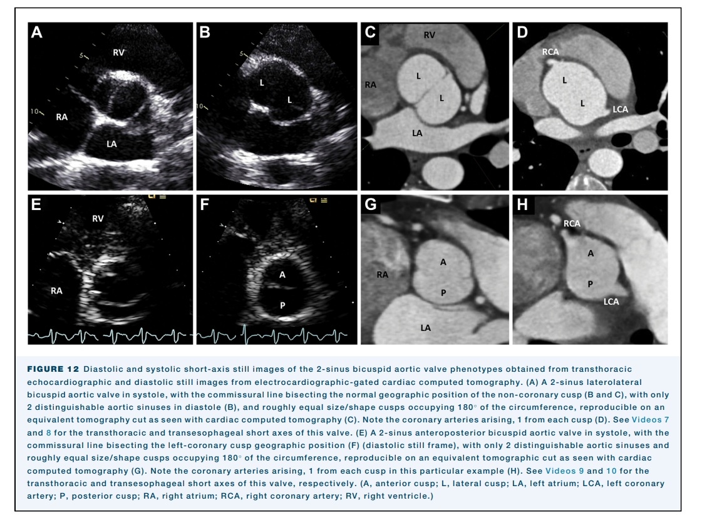
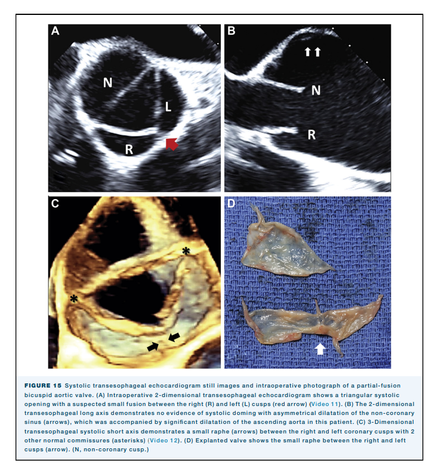
Visuaalisen arvion lisäksi kannattaa ainakin läpän korjausleikkausta suunniteltaessa mitata yleisimmässä tyypissä eli fuusioituneessa tyypissä ei-fuusioituneen läpän kommissuurien välinen kulma. Kulman terävöityessä leikkauksesta tulee vaikeampaa. Yleensä mitataan myös mm. aortan annulus ja muita aortan mittoja riippuen vähän suunnitellusta leikkauksesta – varsinkin läpän korjausleikkausta varten yksi merkittävimmistä on aorttaläpän koaptaation efektiivinen korkeus (geometrista korkeutta ei saa mitattua echossa yleensä; korkeudet kuvastavat sitä, onko tarpeeksi läppäkudosta käytettävissä).
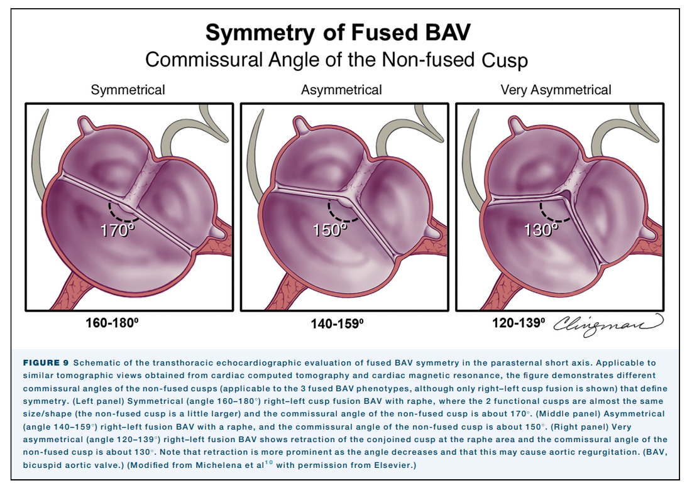
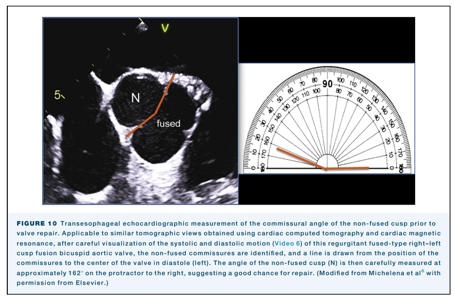
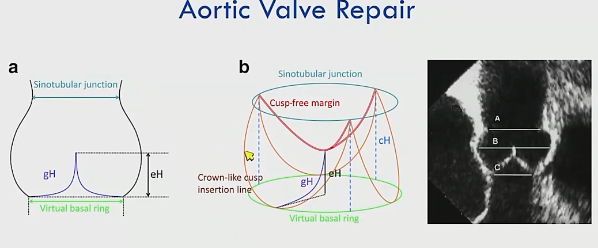
Bikuspisen aortan ekokardiografiseen arvioon liittyy itse läpän lisäksi tietysti aortan dilataation ja koarktaation etsiminen, koska nämä ovat erityisen yleisiä BAV-potilailla. Dilataation prevalenssi BAV-potilailla on lähteestä riippuen n. 40-70%. Koarktaatio on n. 7-10%:lla aikuispotilaista, joilla on BAV (ja toiseen suuntaan: jos on koarktaatio, niin BAV on 50-60%:lla).
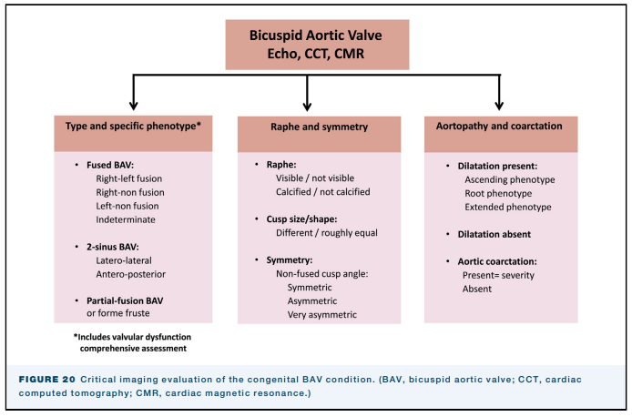
11.4 Koarktaatio
Aortan koarktaatiolla (CoA) tarkoitetaan synnynnäistä ja paikallista kaventumaa, joka sijaitsee tavallisesti valtimotiehyen (tai sen jäänteen) laskukohdan lähellä. Koarktaatiossa erotetaan kolme anatomista tyyppiä: preduktaalinen, duktaalinen ja postduktaalinen koarktaatio. On myös klassisesti olemassa jako infantiiliin ja aikuistyyppiseen koarktaatioon.
Aikuistyypissä koarktaatio sijaitsee ductus arteriosuksen tai sinänsä ligamentum arteriosumin distaalipuolella (tai joskus sen kohdalla). Älä kuitenkaan anna nimen hämätä, aikuistyyppisen koarktaation voi ihan hyvin diagnosoida lapsella tai teinilläkin. Samoin preduktaalinenkin koarktaatio voidaan joskus todeta vasta vanhemmalla iällä, jos se on lieväasteinen.
- Kylkiluuvaltimoiden anastomoosien ja lisääntyneen virtauksen takia yksi klassisimmista koarktaation röntgenlöydöksistä on kylkiluiden lovettuminen thx-rtg:ssa, joka johtuu pullistuneista interkostaaliarterioista. “Kylkiluusyöpymät” ovat yleensä havaittavissa thoraxkuvassa 10. ikävuoden jälkeen. Kylkiluuvaltimoiden pulsointi voi myös joskus olla mahdollista palpoida.
- Pulssin tunnusteleminen samanaikaisesti kaulavaltimosta/radialiksesta ja reisivaltimosta on hyvä keino aortan koarktaation tai muun aortassa olevan ahtauman toteamiseksi. Kun kyseessä on kliinisesti merkityksellinen koarktaatio tai muu aortan ahtauma, myöhästyy reisivaltimon pulssiaalto selvästi kaulavaltimon tai radialiksen pulssiin verrattuna (brachio-femoral delay). Terveelläkin henkilöllä pulssiaalto tuntuu kuitenkin aavistuksen verran myöhemmin reisivaltimossa kuin kaulavaltimossa.
- Samoin on todettavissa paine-ero ala- ja yläraajojen välillä (hypertensio koarktaatiosta proksimaalisesti ja hypotensio koarktaatiosta distaalisesti). Aortan koarktaatiota epäiltäessä paras testi aluksi onkin neliraajapainemittaus, jonka jälkeen tehdään kaikututkimus varmistavana testinä.
- Koarktaatiopotilaat ovat usein oireettomia, joskus harvoin voi esiintyä alaraajojen väsymistä rasituksen yhteydessä tai päänsärkyä. Oireita on useammin, jos ahtauma on tiukka tai sydämessä on lisävikoja. Usein epäilyn voi herättää hoitoresistentiltä vaikuttava verenpainetauti (yläraajapaineet pysyvät korkeina lääkityksestä huolimatta).
- Vielä yksi statuslöydös koarktaatiossa on systolinen sivuääni, joka kuullaan usein parhaiten selässä vasemman lapaluun alta. Mahdollisesti usein tilaan liittyvän bikuspisen aorttaläpän takia todetaan myös systolinen ejektioklikki.
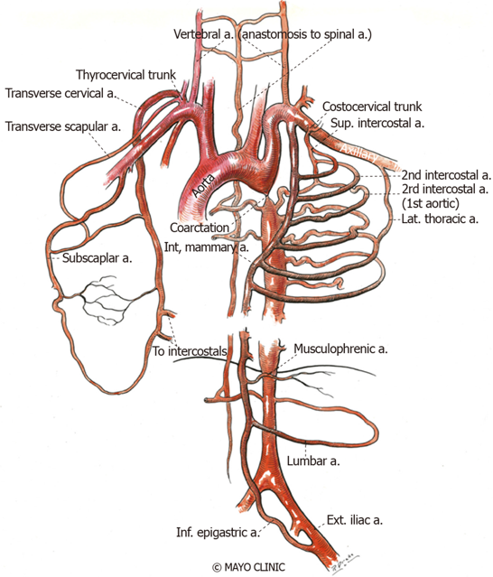
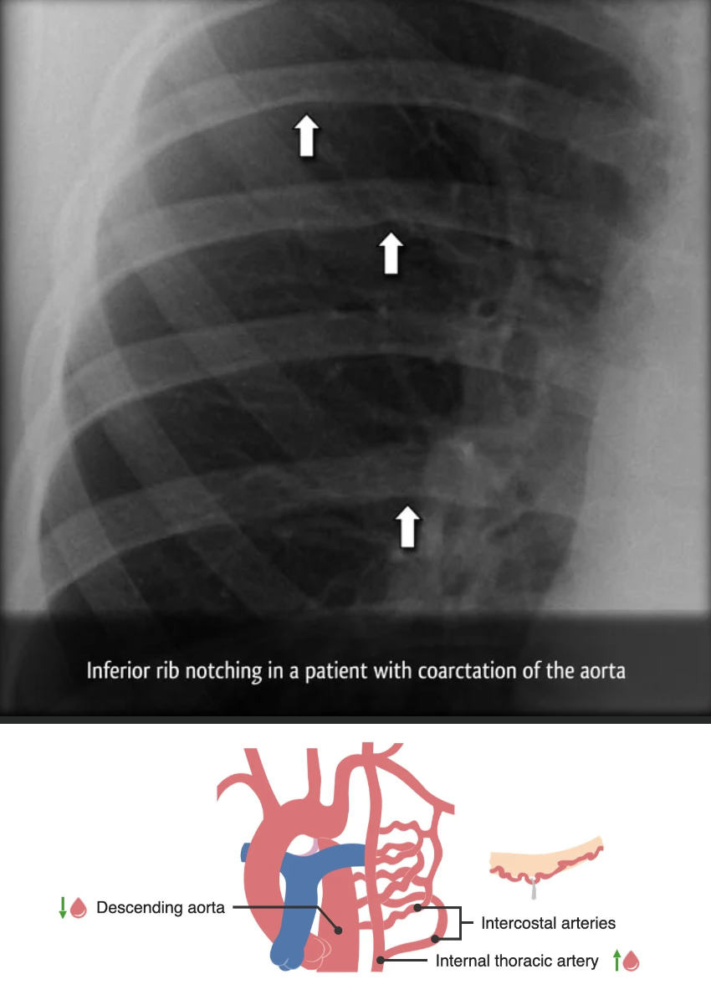
11.4.1 Koarktaation echo -tutkimus
Itse koarktaation visualisaatio ja sen läpi virtaavan veren mittaukset tehdään useimmiten suprasternaali-ikkunasta. Usein voidaan nähdä ns. “posterior shelf”, joka työntyy aorttaan ja aiheuttaa kaventuman. Virtaukset sen läpi voidaan visualisoida väridopplerilla (nähdään turbulenttia värikästä virtausta veren kiihtyessä koarktaation kohdalla) ja mitata CW-dopplerilla.

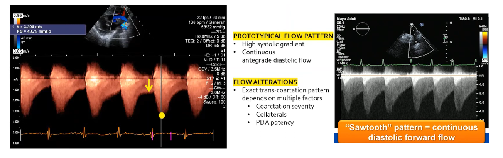
Gradienttien mittaaminen dopplerkäyrästä voidaan tehdä parilla eri tavalla:
- Korjattu MIG = 4(V2^2 - V1^2)
- Merkittävä kollateraalivirtauksen kehittyminen pitkäaikaisessa koarktaatiossa voi johtaa siihen, että huippugradientti voi olla suhteellisen matala, vaikka koarktaatio olisikin merkittävä.
- Merkittävä kollateraalivirtauksen kehittyminen pitkäaikaisessa koarktaatiossa voi johtaa siihen, että huippugradientti voi olla suhteellisen matala, vaikka koarktaatio olisikin merkittävä. Gradientti voi myös olla hämäävän matala esim. matalassa minuuttitilavuudessa, PDA:ssa tai obstruktion ollessa merkittävän pitkä anatomisesti.
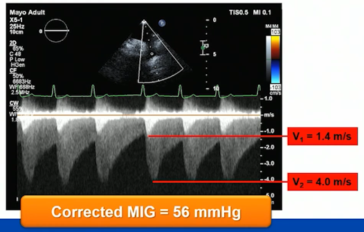
Virtauksia kannattaa tutkia myös vatsa-aortasta dopplerilla. Vatsa-aortta voidaan siis hakea subkostaali-ikkunasta ja sitten asettaa sen päälle dopplerboksi. Sitten voi asettaa PW-samplegaten virtaukseen. Normaalisti virtauskäyrässä nähdään terävä aikainen systolinen deflektio, joka myös laskee (downstroke) nopeasti loppusystolessa. Aikaisdiastolessa nähdään yleensä pieni virtauksen kääntyminen, kun sepelvaltimot täyttyvät. Loppudiastolessa sitten virtausta taas tapahtuu hieman eteenpäin johtuen verisuonten elastisiteetista.
Koarktaatiossa kuitenkin nähdään usein hidas systolinen downstroke ja virtauksen kääntymisen puuttuminen eli jatkuvaa virtausta diastolessa.
Tässä alla näkee vasemmalla normaalin vatsa-aorttavirtauksen ja oikealla koarktaatiossa todettavan tyypillisen käyrän. Alemmassa kuvassa samoin vasemmalla on normaali ja kaksi oikeanpuoleista kuvaa osoittavat virtausta kahdessa erilaisessa koarktaatiossa.
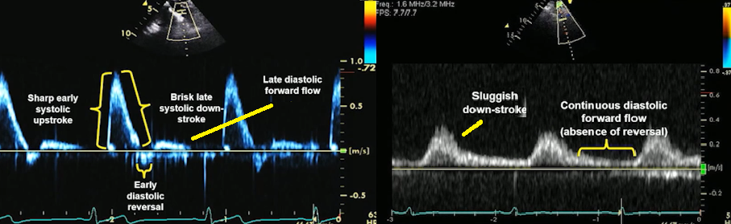
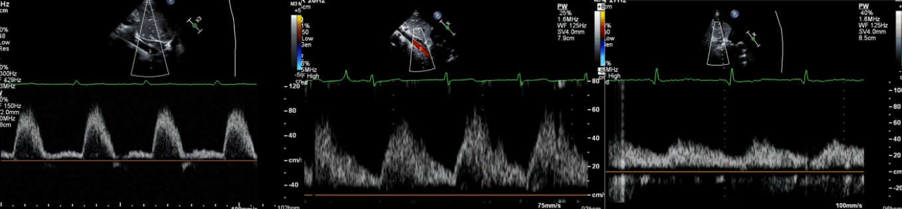
Muista myös arvioida aorttaläppä tarkasti: suurimmalla osalla koarktaatiopotilaista on kaksikuspinen aorttaläppä! Samoin jos potilaalla on kaksikuspinen aorttaläppä, niin tulisi muistaa etsiä koarktaation merkkejä.
11.4.2 Koarktaation vaikeusaste ja hoitovaihtoehdot
Kajoavan hoidon käyttöaihe kaikenikäisillä potilailla on anatominen osoitus koarktaatiosta + yli 20 mmHg:n painegradientti oikean yläraajan ja alaraajojen välillä verenpainemittauksissa/katetrisaatiossa tai keskigradientti yli 20 mmHg dopplerilla tai vähintään 50 %:n ahtauma koarktaatiokohdan läpimitassa verrattuna aortan leveyteen palleatasolla. Valtimotiehytvirtauksesta riippuva koarktaatio, tai mikäli koarktaatioon liittyy sydämen vajaatoiminta, hoidetaan herkästi kirurgisesti.
Dopplermittaukset eivät usein ole riittävän tarkkoja, minkä takia aortta kuvataan lisäksi yleensä CT- tai MR-angiografialla. Usein myös tehdään katetrisaatio, jonka yhteydessä voidaan hoitaa perkutaanisestikin esim. pallolaajennuksella tai stenttauksella. Varhaislapsuudessa aortan koarktaatio korjataan pääsääntöisesti kirurgisesti tekemällä suora (pää päätä vasten) liitos tai harvemmin subclavian flap -tekniikalla, mutta yli 1 vuoden ikäisillä potilailla jo noin 80 %:ssa tapauksia käytetään pallolaajennusta. Jos potilas painaa yli 30 kg, käytetään jo natiivikoarktaatiossa peittostenttiä pallolaajennuksen tukena.
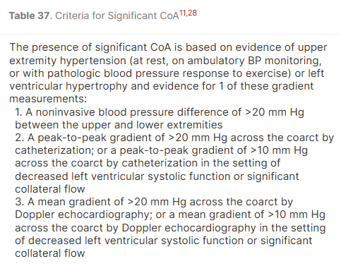
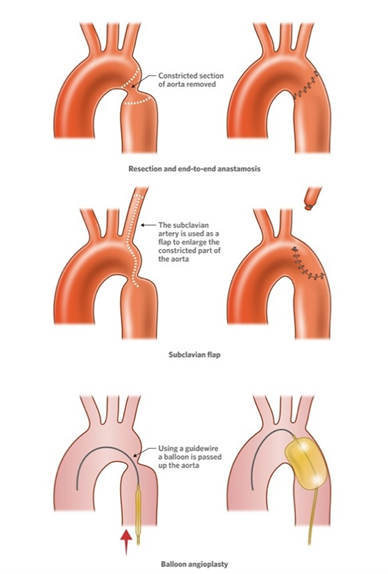
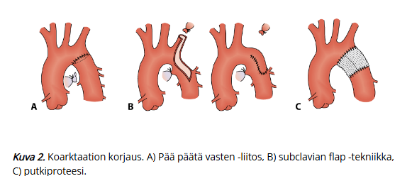
11.4.2.1 Myöhäisongelmat ja liitännäisviat
Leikatun aortan koarktaation ennuste ja myöhäisongelmat riippuvat leikkausajankohdasta, leikkaustekniikasta ja liitännäisvioista. Lapsena tehdyn korjauksen jälkeen 83 % potilaista on elossa 35 vuoden kuluttua leikkauksesta, kun 20–40 vuoden iässä leikatuilla vastaava elossaololuku on 75 %. Myöhäiskuolleisuus on pienempi, jos koarktaatio on korjattu pää päätä vasten -liitoksella (9 %) verrattuna muihin menetelmiin (> 20 %).
Tällä hetkellä Suomessa on noin 800 aikuisikäistä potilasta, joille on lapsuudessa tehty korjausleikkaus aortan koarktaation vuoksi. Kaikki potilaat vaativat jatkuvaa seurantaa vähintäänkin yleiskardiologisissa yksiköissä, mutta jopa 60 % suomalaisista koarktaatiopotilaista ei ole säännöllisessä seurannassa.
Yleisin myöhäisongelma on kohonnut verenpaine. Jos koarktaatio on korjattu vasta yli 5 vuoden iässä, peräti 75 %:lla potilaista on hoitoa vaativa korkea verenpaine aikuisena. Kliininen rasituskoe tai ambulatorinen verenpainemittaus tulee uusia muutaman vuoden välein, sillä osalla potilaista verenpaine nousee poikkeavasti rasituksessa (systolinen paine > 220 mmHg), vaikka lepoverenpaine olisi normaali tai vain lievästi kohonnut. Verenpaineen myöhäisen kohoamisen syyksi arvellaan aortan seinämän jäykistymistä leikkausalueella ja baroreseptorien poikkeavaa toimintaa.
Koarktaatiokohta ahtautuu uudelleen noin 5–10 %:lla vastasyntyneenä leikatuista potilaista, muilla lapsuusiässä leikatuilla vielä harvemmin. Imeväisiän jälkeen tehdyn palolaajennuksen jälkeinen riski on 7–12 %. Stentillä hoidetun koarktaation uudelleenahtauman riski on pidemmässä seurannassa noin 7 %. Jatkuvalla dopplerkuvauksella kaulakuopasta mitatut huippugradientit yliarvioivat ahtauman vaikeusastetta. Esimerkiksi korjausleikkauksen jälkeen aortan komplianssin heikentyminen voi johtaa korkeisiin huippugradientteihin ilman ahtaumaa. Todennäköisesti diastolinen antegraadinen virtaus on luotettavin kaikukuvauksella saatava viite merkittävästä koarktaatiosta tai rekoarktaatiosta. Uudelleenahtauman hoidon aiheet ovat samat kuin korjaamattomassa viassa. Uudelleenahtauma hoidetaan nykyisin useimmiten pallolaajennuksella, jonka yhteydessä yhä useammin asennetaan stentti tai peittostentti. Peittostenttiä käytetään, jos laajennetaan hyvin tiukkaa ahtaumaa, johon liittyy aneurysman tai aortan repeämän riski. Uudelleenahtauman leikkaushoidossa aikuisiässä tarvitaan useimmiten putkiproteesia. Katetritoimenpide on vakiintunut uudelleenahtauman hoidossa ja uusintaleikkaus tehdään potilaille, joille suonensisäinen toimenpide ei ole anatomisista syistä mahdollinen. Katetritoimenpide onnistuu suurimmalle osalle potilaista ja vakavat komplikaatiot ovat harvinaisia. Koarktaation ja uusinta-ahtauman kirurginen sekä perkutaaninen hoito on Suomessa keskitetty HUSiin.
Noin 9 %:lle kehittyy aneurysma koarktaation kirurgisen tai perkutaanisen korjauksen jälkeen. Erityisesti jos koarktaatioaluetta on primaarileikkauksessa laajennettu paikkalapulla tai on käytetty subclavian flap -tekniikkaa ja leikkaus on tapahtunut 5–7 ikävuoden jälkeen, on aortan tilaa seurattava magneettikuvauksella muutaman vuoden välein aneurysman ja sen repeämisvaaran vuoksi. Veriyskä voi olla pseudoaneurysman ja siihen liittyvän aortobronkiaalisen fistelin ensimmäinen oire ja on aihe päivystysluonteiseen tietokonetomografiakuvaukseen sekä tarvittaessa kiireelliseen kirurgiseen hoitoon (ennen keuhkoputkien tähystystä!). Korjatun koarktaatioalueen proksimaali- tai varsinkin distaalipuolella aortta voi laajentua ja joskus myöhemmin dissekoitua.
Seurantaa edellyttävistä koarktaation liitännäisvioista kaksiliuskainen aorttaläppä on tavallisin. Se esiintyy jopa 80 %:lla koarktaatiopotilaista. Harvinaisempia liitännäisvikoja ovat aorttaläpän alapuolinen ahtauma, mitraaliläpän viat ja endokardiaalisen fibroelastoosin aiheuttama restriktiivinen kardiomyopatia. Lisäksi sekä varhaisen sepelvaltimotaudin että aivoverenvuodon vaara (aivovaltimoiden aneurysmat 10 %:lla) ovat koarktaatiopotilailla suuremmat kuin muulla väestöllä.
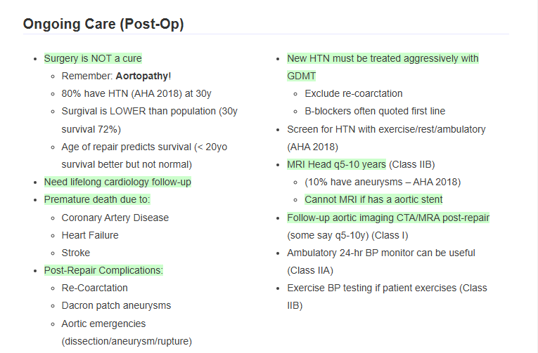
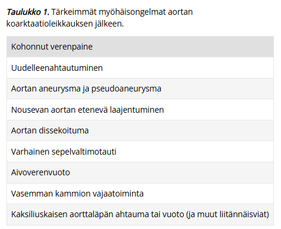
11.5 Akuutit aorttaoireyhtymät (AAS)
Äkilliset aortan sairaudet ovat usein hätätilanteita, joissa ennuste on huono, ellei oikeaan diagnoosiin ja hoitoon päästä ajoissa.
- dissekoituma
- intramuraalihematooma (IMH)
- penetroiva ateroskleroottinen ulkus (PAU)
- traumaattinen aortan seinämän laseraatio (ei tosin aina osa AAS:n tyypillistä määritelmää)
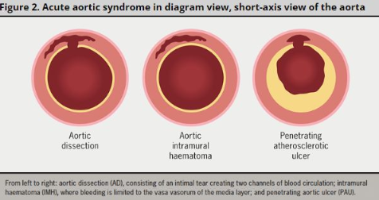
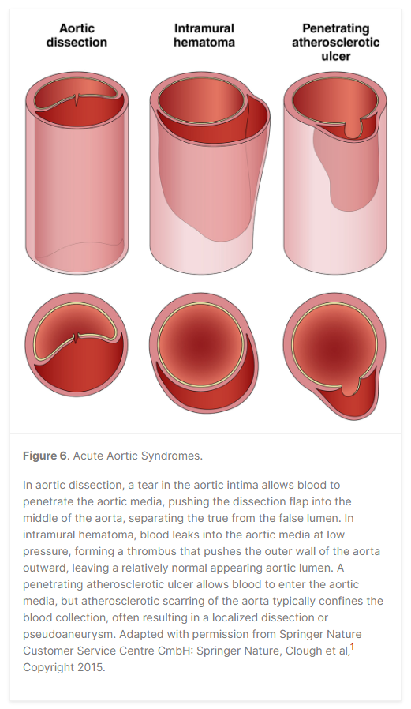
Akuutti dissekoituma on yleisin näistä. Aortan dissekoituma tarkoittaa pitkittäistä intiman repeämää, jossa verta virtaa median läpi repien sitä auki. Virtaus muodostaa kerroksien erottuessa oikean luumenin ja pseudoluumenin (false lumen), joka tarkoittaa mediakerrokseen muodostunutta veren kulkureittiä. Tämä väärä käytävä voi joko hyytyä umpeen eli trombosoitua (intramuraalihematooma, IMH); IMH voi syntyä myös vasa vasorum -suonien ruptuurasta seinämän sisällä. Penetroiva ateroskleroottinen ulkus (PAU) taas kuvaa tilaa, jossa aortan ateroskleroottinen plakki ulseroituu ja syntyy avoin reitti suonen seinämään – PAU voi johtaa intramuraaliseen hematoomaan, dissekoitumaan tai jopa aortan repeämiseen (yleensä todetaan laskevan aortan alueella (eniten ateroskleroottista rasitusta siellä)).
Dissekoituman ilmaantuvuus on 2–10 tapausta/100 000 henkeä/vuosi. Esiintymishuippu nousevan aortan dissekoitumassa on noin 50–60 vuoden iässä ja laskevan aortan dissekoitumassa 60–70-vuotiailla. Kroonisesta dissekoitumasta on kyse, kun dissekoituma on yli kolme kuukautta vanha. Valtaosa potilaista on miehiä, ja dissekaatioriski suurenee iän myötä. Tavallisin riskitekijä on hypertensio (vasa vasorumin hyaliininen arterioloskleroosi hypertension aiheuttamana johtaa aortan median atrofiaan ja seinämän heikentymiseen, mikä lisää riskiä aortan dissekoitumiselle ja aneurysmille ; hypertensio myös suoraan altistaa ateroskleroosille). Lisäksi aortan dissekaatiolle altistavia tekijöitä ovat muut aortan tai aorttaläpän sairaudet, tupakointi, aikaisempi sydänkirurgia, rintakehän vammat ja suonensisäisten huumeiden käyttö. Perinnölliset aortan sairaudet ovat varsinkin nuorissa ikäryhmissä merkittävä dissekaatiolle altistava tekijä.
Dissekoituma etenee tyypillisimmin anterogradisesti, mutta joskus myös retrogradisesti. Dissekoituma voi edetä aortan sivuhaaroihin ja huonontaa niiden virtausta. Silloin sydämeen, aivoihin (jopa 20 %:lla potilaista pääasiallinen oire voi olla äkillinen tajunnanmenetys), selkäytimeen, viskeraalielimiin tai alaraajoihin voi tulla kohtalokkaita iskeemisiä pääte-elinkomplikaatioita. Klassinen oire on äkillisesti alkava repivä rinta-selkäkipu, joka voi muuttaa paikkaa dissekoituman edetessä. Aortan sivuhaarojen malperfuusio voi aiheuttaa monenmuotoisia oireita kohde-elimestä riippuen, esim. neurologisia oireita ja/tai vatsakipuja. Oireet voivat joskus olla hyvinkin epätyypillisiä ja moninaisia. On arvioitu, että jopa 30 %:lla potilaista, joilla myöhemmin todetaan aortan dissekoituma, on aluksi epäilty jotain muuta tautia. Potilas voi olla hyvinkin oireeton ja potilaan saattaa vahingossa lähettää päivystyksestä kotiin kuolemaan. Potilaalla voi esim. esiintyä vain ohimenevää kipua tai neurologinen oire, ja statuksessa todetaan pulssipuutos esim. toisessa nivusvaltimossa. Pulssipuutokset ovatkin jokseenkin tyypillisiä, samoin verenpaine-ero >20 mmHg käsien välillä.
Aortan dissekoitumilla on kaksi luokittelutapaa: Stanford (A ja B ja non-A-non-B) ja Debayke (I-III) – toimivin ja käytetyin kliininen luokittelu on Stanfordin mukainen.
- Tyypin A dissekoituman mahdollistama intiman repeämä sijaitsee missä tahansa
- Yleensä repeämä lähtee nousevasta aortasta, mutta tyypin A määritelmä on, että dissekoituma affisioi vähintään aortan nousevaa osaa (voi siis olla lähtöisin vaikka laskevasta aortasta ja kulkea retrogradisesti nousevaan aorttaan)
- Yleisin dissekoituman lähtökohta on ensimmäiset pari senttiä nousevasta aortasta ja näin tyypin A on yleisin dissekoitumatyyppi
- Intiman repeämä sijaitsee a. subclavia sinistrasta distaalisesti. Dissekoituma myös pysyy a. subclavia sinistrasta distaalisesti eikä kulje retrogradisesti kaareen (non-A-non-B) tai nousevaan aorttaan (Stanford A)
- Intiman repeämä sijaitsee joko distaalisesti vasemmasta solisvaltimosta (veri virtaa retrogradisesti aortan kaareen, mutta ei nousevaan aorttaan) tai truncus brachiocephalicuksen ja vasemman solisvaltimon välissä (veri voi edetä kaarta ja laskevaa aorttaa eteenpäin)
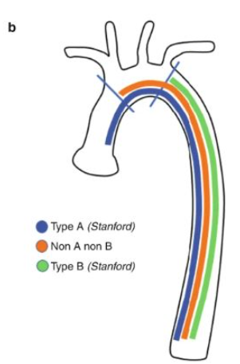
Tyypin A dissekoitumassa on korkein kuolleisuus, koska siinä nouseva aortta vaurioituu (nouseva aortta on ehjä tyypin B (ja tyypin non-A-non-B) dissekoitumassa). Nousevan aortan eheys on merkittävää sen vuoksi, että se sijaitsee sydänpussin sisällä, sen tyvestä lähtevät koronaariostiumit ja sen tyveen kiinnittyy aorttaläppä. A-tyypin dissekoituma voi sen vuoksi aiheuttaa sydänpussin tamponaation, aorttaläpän pettämisen, koronaariostiumien ahtautumisen tai kaikki edellä mainitut.
- Aortan juuren dilataatio johtaa epätäydelliseen aorttaliuskojen koaptaatioon
- Kuspien prolapsi (asymmetrinen dissekoituma painee kuspeja annuluksen alle)
- Annuluksen tukirakenteiden häiriintyminen ja flail leaflet
- Intimakielekkeen (dissection flap) prolapsi aorttaläpän läpi diastolessa
- Aorttaläppä voi olla jo alkujaan epänormaali (esim. bikuspidi läppä – on riskitekijä dissekoitumalle ja niiden yhteydessä on muutenkin usein aorttavuotoa)
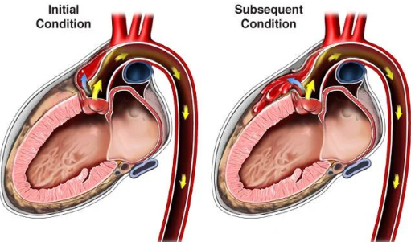
11.5.1 Dissekoituman diagnostiikka
Ensisijainen kuvantamismenetelmä aortan dissekoitumaa epäiltäessä on yleensä mahdollisimman nopeasti suoritettava varjoainetehosteinen TT-kuvaus, jonka avulla voidaan varmistaa diagnoosi, nähdä koko aortta ja selvittää dissekoituman laajuus ja sivuhaarojen tila varsin tarkasti; sensitiivisyys ja spesifisyys ovat yli 95 %. Usein kuitenkin potilas oireilee ei-niin-selkeällä tavalla ja muitakin tutkimuksia tehdään sitä ennen.
Itse aortan kuvantamismenetelmistä TT:n lisäksi on käytössä MRI ja UÄ. Magneettikuvauksen käyttöä diagnostiikassa rajoittavat huono saatavuus päivystysaikana ja soveltumattomuus kriittisesti sairaiden potilaiden hoitoon. Se on kuitenkin hyvä kroonisten dissekoitumien diagnostiikassa ja hoidon suunnittelussa sekä aortan sairauksien seurannassa.
UÄ:n käyttö akuuteissa dissekoitumissa on taas yleistä. Rintakehän päältä tehtävä sydämen ultraäänitutkimus (TTE) voidaan tehdä heti päivystyspoliklinikalla huonokuntoiselle, rintakipuiselle potilaalle. Dissekoitumassa nähdään laajentunut, poikkeava aortan tyvi, aorttaläpän mahdollinen vuoto ja sydänpussin nestekertymä luotettavasti. Jos näkyvyys nousevaan aorttaan on hyvä ja tekijä on kokenut, oikea ja väärä luumen sekä sisäkerroksen repeämä voidaan löytää kohtuullisen hyvin. Nousevan aortan osalta menetelmän sensitiivisyys on 77–80 % ja spesifisyys noin 95 %. Ruokatorven kautta tehtävä sydämen ultraäänitutkimus (TEE) on parempi tutkimus, ja sillä saavutetaan kaikissa aortan dissekoitumissa keskimäärin 89–99 %:n sensitiivisyys ja 89 %:n spesifisyys, vaikkakin nousevan aortan yläosa jää usein katveeseen. Seinämänsisäinen verenpurkauma, haavauma ja vamma voidaan useimmiten nähdä varsin hyvin. Joissakin sairaaloissa on suoraan leikkaussaliolosuhteissa tehtävä TEE-tutkimus onkin ensisijainen tutkimus kriittisesti sairaille potilaille aortan dissekoitumaa epäiltäessä. TEE:n tärkein käyttöaihe on kuitenkin toimenpiteiden ohjaaminen leikkaussalissa.
TTE ei voi siis poissulkea dissekoitumaa, mutta rule-in-tutkimuksena se on hyvä diagnoosin nopeassa saamisessa sekä myös auttaa epäselvien dissekoitumien kiinni nappaamisessa (varsinkin A-tyypin; B-tyypissä sensitiivisyys on matalampi). Jos TTE-tutkimuksella saa definitiivisen A-tyypin dissekoituman diagnoosin, niin on mahdollista sairaalan toimintatavoista riippuen siirtää potilas suoraan leikkaussaliin ilman CT-tutkimusta, kunhan vain intraoperatiivinen TEE saadaan järjestettyä.
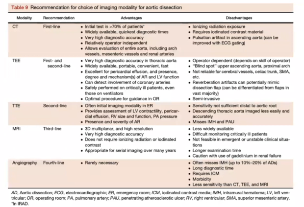
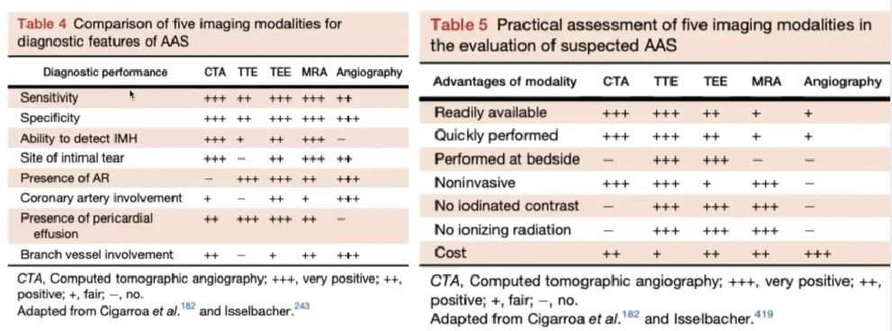
11.5.2 Echo-arvio
Klassisen aortan dissekoituman diagnoosi yleensä perustuu siihen, että voidaan osoittaa intimakieleke (dissection flap, intimal flap), joka jakaa aortan oikeaan luumeniin ja pseudoluumeniin. Tämä voidaan osoittaa niin CT:llä, MRI:llä kuin UÄ:lläkin. Tämä opas keskittyy nyt ultraäänilöydöksiin ja spesifimmin transtorakaalisen UÄ:n käyttöön.
TTE mahdollistaa erityisesti aortan proksimaalisten osien tarkastelun – varsinkin aortan tyvi visualisoituu yleensä hyvin. Myös proksimaalinen nouseva aortta, aortan kaari ja proksimaalinen laskeva aortta sekä myös vatsa-aorttakin ovat usein nähtävissä aika hyvin.
Aortan tyvi ja proksimaalinen nouseva aortta visualisoituvat parhaiten yleensä PLAX-projektiossa. Alla olevissa videoissa ja kuvissa voidaan nähdä esimerkkejä dissekoitumista.
Nuoli osoittaa intimakielekkeen.


Seuraavat kolme videota samalta potilaalta, jolla vatsakipua ja sekavuutta. Ensimmäisessä näkyy intimakieleke proksimaalisessa aortassa PLAX:ssa ja toisessa supresternaalisti. Kolmannessa näkyy flap vatsa-aortassa asti. Kyseessä oli pitkä aortan A-tyypin dissekoituma.


Tässä PLAX-projektiossa nähdään tyypin A dissekoituma, jossa intimaan virrannut veri on trombotisoitunut.

Tyypin B dissekoitumat ovat vaikeampia havaita, mutta suprasternaalisesti voidaan usein nähdä varsinkin doppleria hyödyntämällä false ja true lumen – true luumenin virtaus on selkeämpää. Tässä alla esimerkki.

Tässä vielä koostettuna echo-löydökset dissekoitumassa.
11.5.3 Dissekoituma vs artefakta
Kaikki “ekstralinjat” aortassa eivät ole dissekoituma. Joskus intimakielekkeen kaltainen linja voi olla ihan vain artefaktaa eikä kuvasta mitään “oikeaa” rakennetta. Yleinen artefakta on ns. simple reverberation artifact, joka johtuu siitä, että aortan anteriorisesta seinämästä heijastuva ultraääniaalto heijastuu paluumatkallaan taas anterioriseen seinämään ja näin aalto tekee käytännössä kahden reissun pituisen matkan. Anturi luulee, että toisen kerran seinämästä heijastuva palaava aalto on tehnyt vain yhden reissun ja arvioi paluuajasta, että tuleva aalto tuli oikeaa rakennetta syvemmältä. Tämän takia nähdään artefakta aortan sisällä n. 2 kertaa syvemmällä kuin anteriorinen seinämä.
Erityisen hyvä työkalu erottamaan tämä artefakta oikeasta intimakielekkeestä on väridoppleri, jolla nähdään normaalit homogeeniset virtaukset eikä “rakenne” häiritse virtauksia.